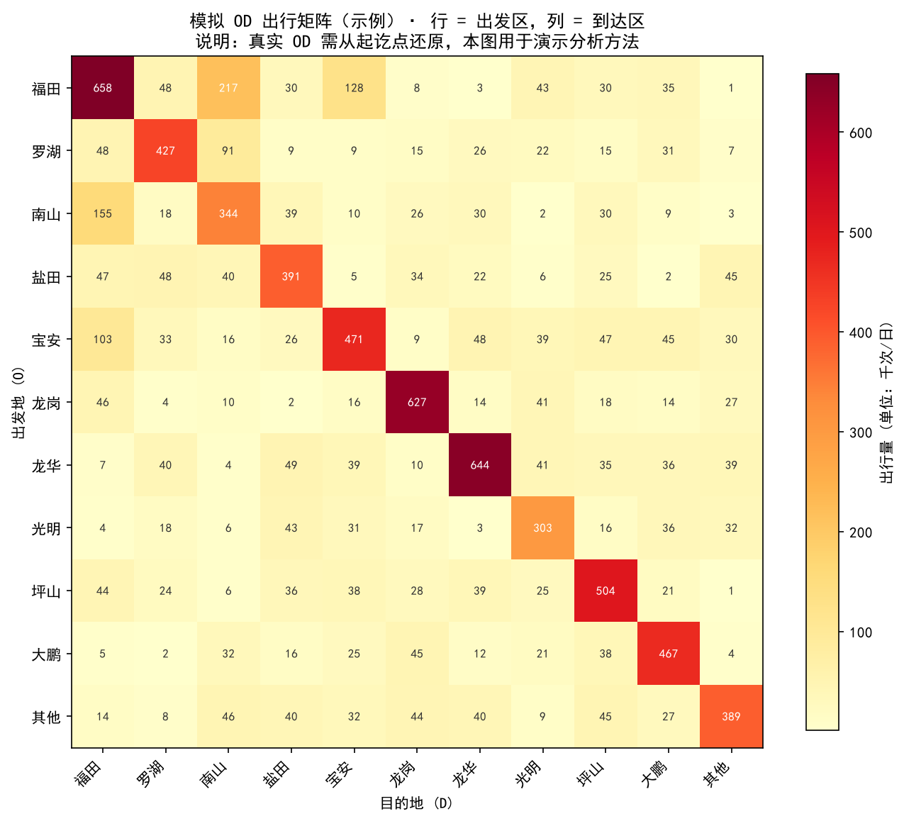

分析 · OD
模拟演示 · 深圳市分区 OD 出行矩阵示例。行 = 出发区，列 = 到达区，颜色越深/数字越大表示联系越强。真实 OD 需按停留点或 passenger 切换从原始轨迹还原。
OD 矩阵：从"车怎么动"到"人怎么流"
轨迹数据最有价值的抽象之一，是把每段移动压缩成"从 A 区到 B 区"的出行。 把全天所有这样的"从哪来、到哪去"汇总成一张表，就是 OD 出行矩阵（Origin–Destination Matrix）。 它能回答：商圈几点涌入？居住区早晨流向哪里？高铁站主要服务哪些区？
概念：OD 矩阵不是地图，是一张"流量表"
矩阵的行是出发地（O），列是目的地（D），格子里的数字是出行量。如果研究深圳市，行/列可以是行政区；如果研究一个商圈，行/列可以是周边 1 km × 1 km 的网格。
OD 矩阵：每个格子 O→D 的数值代表从出发区到目的区的出行次数或强度。颜色越深，流量越大。
如何从真实轨迹构建 OD 矩阵？
构建 OD 不是简单"第一个点当 O、最后一个点当 D"，因为一辆车一天有很多段行程。正确的做法是先"分行程"：
- 切分停留点
用速度≈0、连续 N 分钟不动的点识别一次驻停（上客或下客）。
- 相邻驻停点之间就是一段行程
行程起点 = 上一个停留点的中心，终点 = 下一个停留点的中心。
- 把坐标映射到区域
例如把经纬度落到行政区边界或 1 km 网格。
- 按 O-D 汇总计数
全天所有行程的 O-D 对统计频次，填进矩阵。
📌
深圳为什么最适合做 OD？因为它有
passenger 字段。
空车→载客那一刻可视为上客（O 附近），载客→空车那一刻可视为下客（D 附近），比纯停留点检测更直接。
北京没有 passenger，只能用长时间驻停来推断 OD，准确度会低一些。
模拟演示：深圳市分区 OD 矩阵
下面这张 OD 矩阵不是用真实数据逐条算出来的，而是按深圳主要行政区构造的模拟示例： 对角线高（区内出行多），福田↔南山、福田↔宝安有明显强联系。它用于展示 OD 矩阵的可视化形态与阅读方法。

🧭
读 OD 矩阵的三个角度：
- 对角线：区内出行多，说明城市内部活动为主；
- 强非对角格：如福田→南山，代表跨区通勤或商务联系；
- 行和 vs 列和：行和大的区是"出发源地"（居住区），列和大的区是"吸引力汇"（商务区/交通枢纽）。
OD 矩阵能回答什么问题？
| 问题 | OD 怎么用 |
|---|---|
| 早高峰人流从哪涌向 CBD？ | 看住宅区 → 商务区的高峰 OD 流量 |
| 高铁站服务范围有多大？ | 看各行政/网格 → 高铁站的 OD 强度 |
| 哪些区之间联系最弱？ | 看稀疏 OD 格，可能对应公交覆盖不足 |
| 空车调度怎么优化？ | OD 行和大的区更容易产生下一单，司机可就近驻停等单 |